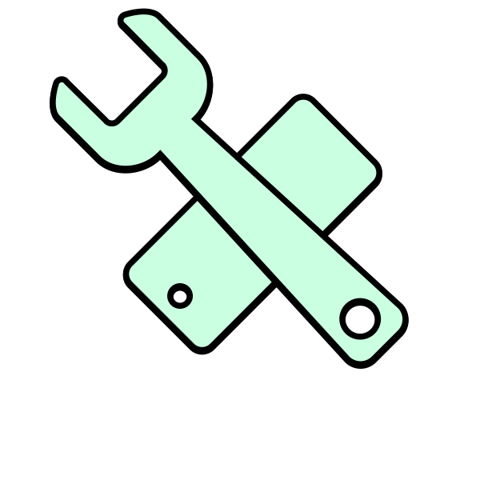

←
AVOIDING THE BRICK
workshops

What values and methodologies do modders share?
The output of the workshops will be visible from January 2026.
This publication resulted from research conducted
as part of the individual thesis project in the master
department Information Design at
Design Academy Eindhoven, The Netherlands
April 2023
Tutors
Simon Davies
Anna Engelhardt
Marco Ferrari
Silvio Lorusso
Gert Staal
Irene Stracuzzi
Written and designed by Marco Pagan
Press Kit